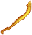

（１）鍛冶
| 画像 | 名称 | 材料 | プロパティ |
| Rune Carving Knife [ルーンナイフ] |
 ingot×9 ingot×9
 dreadhorn mane×1 dreadhorn mane×1
 putrefaction×10 putrefaction×10
 muculent×10 muculent×10
|
マナリーチ ： 25％
スタミナ回復 ： 2 マナコスト ： -10％ 速度 ： +35％ 武器ダメージ ： +30％ |
|
| Cold Forged Blade [氷練刀] |
ingot×18
 grizzled bone×1 grizzled bone×1
 taint×10 taint×10
 blight×10 blight×10
|
Harm ： 40％
詠唱可 Night Sight 速度 ： +25％ 武器ダメージ ： +50％ 冷気 ： 100％ |
|
|  | Overseer Sundered Blade [オーバーシーアの炎刀] |
ingot×15
grizzled bone×1
blight×10
 scourge×10 scourge×10
|
スタミナ回復 ： 2
命中 ： +10％ 速度 ： +35％ 武器ダメージ ： +45％ 炎 ： 100％ |
 |
Luminous Rune Blade [雷光のルーンブレード] |
ingot×15
grizzled bone×1
 corruption×10
putrefaction×10 corruption×10
putrefaction×10
|
Lightning ： 40％
自己修復 ： 5 Night Sight 速度 ： +25％ 武器ダメージ ： +55％ エネルギー ： 100％ |
| Shard Thrasher [シャードスラッシャー] |
ingot×20
 eye of the travesty×1
muculent×10
corruption×10 eye of the travesty×1
muculent×10
corruption×10
|
物理エリア ： 30％
スタミナ ： +8 命中 ： +10％ 速度 ： +35％ 武器ダメージ ： +40％ |


 captured essence×1
captured essence×1

 board×15
board×15
 diseased bark×1
diseased bark×1


 lard of paroxysmus×1
lard of paroxysmus×1

 blue diamond×5
blue diamond×5
 diamond×50
diamond×50

 fire ruby×5
fire ruby×5
 ruby×50
ruby×50

 white pearl×5
white pearl×5
 star sapphire×50
star sapphire×50
 blank scroll×100
blank scroll×100